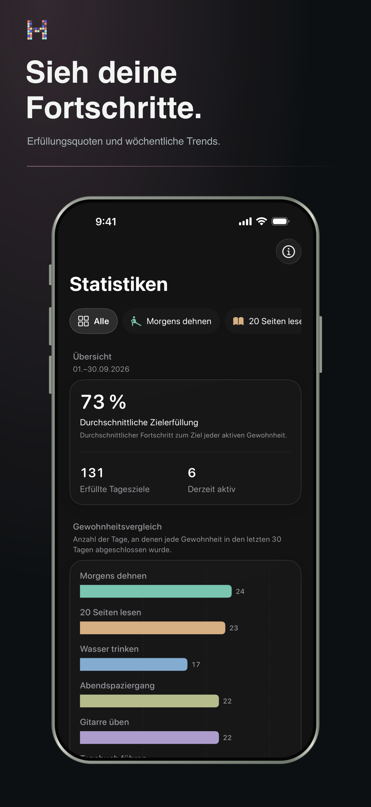

Muster statt Druck
Verstehe, was dich zurückbringt.
Sieh Serien, Abschlussraten und langfristige Muster, ohne deine Routine in eine Tabelle zu verwandeln.
- Aktuelle und beste Serien
- Abschlusstrends und Verteilung
- Wochen-, Monats- und Jahreskontext